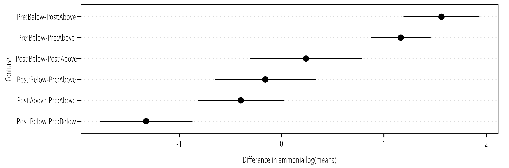

| Data | Parametric | Nonparametric | Permutation |
|---|---|---|---|
8 Water Quality Statistics
This section introduces some statistical approaches commonly used in out projects. For an in depth discussion and examples of statistical approaches commonly employed across surface water quality studies, the reader is highly encouraged to review Helsel et al. (2020).
8.1 Hypothesis Tests
8.1.1 Compare two independent groups
In the following example, we will generate example data using random data drawn from the normal distribution using the rnorm() function. Figure 8.1 shows two samples with \(n\)=10, the first sample was drawn from a normal distribution with mean (\(\mu\))=0.5 and standard deviation (\(\sigma\))= 0.25. The second sample is drawn from a normal distribution with \(\mu\)=1.0 and \(\sigma\) = 0.5.
library(dplyr)
library(ggplot2)
library(tidyr)
library(twriTemplates)
## sets seed for reproducible example with random data
set.seed(1000)
## sample size
n = 10
## generate example data
example_data <- tibble(
sample_1 = rnorm(n = n, mean = 0.5, sd = 0.5),
sample_2 = rnorm(n = n, mean = 0.7, sd = 0.5)
)
example_data |>
pivot_longer(cols = everything(),
names_to = "Sample", values_to = "Value") |>
ggplot() +
geom_boxplot(aes(x = Sample, y = Value)) +
geom_point(aes(x = Sample, y = Value), position = "jitter") +
theme_TWRI_print()
A test for the difference in the means is conducted using the t.test() function to run the two-sample t-test:
results <- t.test(example_data$sample_1, example_data$sample_2)
results
Welch Two Sample t-test
data: example_data$sample_1 and example_data$sample_2
t = -0.88698, df = 17.779, p-value = 0.3869
alternative hypothesis: true difference in means is not equal to 0
95 percent confidence interval:
-0.4946719 0.2011626
sample estimates:
mean of x mean of y
0.3354548 0.4822094 For the t-test, the null hypothesis (\(H_0\)) is that the difference in means is equal to zero, the alternative hypothesis (\(H_1\)) is that the difference in means is not equal to zero. By default t.test() prints some information about your test results, including the t-statistic, degrees of freedom for the t-statistic calculation, p-value, and confidence intervals.
Note
By assigning the output of t.test() to the results object we can also obtaining these results individually, which can be handy for plotting or exporting results to other files. See the output of str(results) for a list of values you can reach.
In this example, we do not have the evidence to reject \(H_0\) at an \(\alpha\) = 0.05 (t-stat = -0.887, \(p\) = 0.387).
Since this example uses randomly drawn data, we can examine what happens when sample size is increased to \(n\) = 100:
## sample size
n = 100
## generate example data
example_data <- tibble(
sample_1 = rnorm(n = n, mean = 0.5, sd = 0.5),
sample_2 = rnorm(n = n, mean = 0.7, sd = 0.5)
)
t.test(example_data$sample_1, example_data$sample_2)
Welch Two Sample t-test
data: example_data$sample_1 and example_data$sample_2
t = -2.246, df = 195.46, p-value = 0.02583
alternative hypothesis: true difference in means is not equal to 0
95 percent confidence interval:
-0.28312141 -0.01837698
sample estimates:
mean of x mean of y
0.5475622 0.6983114 Now we have evidence to reject \(H_0\) due to the larger sample size which increased the statistical power for detecting a smaller effect size at a cost of increasing the risk of detecting an effect that is not actually there or is not environmentally relevant and of course increased monitoring costs if this were an actual water quality monitoring project.
Note
The t-test assumes underlying data is normally distributed. However, hydrology and water quality data is often skewed and log-normally distributed. While, a simple log-transformation in the data can correct this, it is suggested to use a non-parametric or permutation test instead.
The Wilcoxon Rank Sum (also called Mann-Whitney) tests can be considered a non-parametric versions of the two-sample t-test. This example uses the bacteria data first shown in Chapter 6. Figure 8.2 shows the density plot of the bacteria values in the dataset. The heavily skewed data observed in fecal indicator bacteria are well suited for non-parametric statistical analysis.
Attaching package: 'janitor'The following objects are masked from 'package:stats':
chisq.test, fisher.testdf <- read_delim("data/swqmispublicdata.txt",
delim = "|",
# see awkward column names that have to be wrapped
# in between "`" (escape) marks.
col_types = cols_only(
`Segment ID` = col_character(),
`Station ID` = col_factor(),
`Station Description` = col_character(),
`End Date` = col_date(format = "%m/%d/%Y"),
`Collecting Entity` = col_character(),
`Monitoring Type` = col_character(),
`Composite Category` = col_character(),
`Parameter Name` = col_character(),
`Parameter Code` = col_character(),
`Value` = col_number(),
`RFA/Tag ID` = col_character()
)) |>
clean_names() |>
filter(parameter_code == "31699") |>
select(station_id, value)
ggplot(df) +
geom_density(aes(value, fill = station_id), alpha = 0.5) +
theme_TWRI_print()
The Wilcoxon test is conducted using the wilcox.test() function. When your data is in “tidy” long format like above, you can use the formula notation in wilcox.test(), eg. y ~ x where y represents the response variable and x is the variable representing the factors you are comparing. You can also use use x and y arguments if your are comparing two numeric vectors. Both examples are shown below:
## formula notation
wilcox.test(value~station_id, data = df,
conf.int = TRUE)
Wilcoxon rank sum test with continuity correction
data: value by station_id
W = 1041, p-value = 0.005188
alternative hypothesis: true location shift is not equal to 0
95 percent confidence interval:
-169.99994 -26.00004
sample estimates:
difference in location
-84.00001 ## default notation
x <- df |>
filter(station_id == "12517")
y <- df |>
filter(station_id == "15325")
wilcox.test(x$value, y$value,
conf.int = TRUE)
Wilcoxon rank sum test with continuity correction
data: x$value and y$value
W = 1041, p-value = 0.005188
alternative hypothesis: true location shift is not equal to 0
95 percent confidence interval:
-169.99994 -26.00004
sample estimates:
difference in location
-84.00001 Chapter 5.2 in Helsel et al. (2020) provide an excellent explanation of permutation tests. The permutation test works by resampling the data for all (or thousands of) possible permutations of group assignments. Assuming the null hypothesis is correct, it makes no difference which group any particular observation gets assigned to. The difference between groups and test statistics are calculated for each permutation. Then the proportion of permutation results that equal or exceed the difference calculated in the original data is the permutation p-value.
Loading required package: survivaloneway_test(value~station_id,
data = df,
distribution = approximate())
Approximative Two-Sample Fisher-Pitman Permutation Test
data: value by station_id (12517, 15325)
Z = 0.57127, p-value = 0.6822
alternative hypothesis: true mu is not equal to 0Notice that we end up with a different result from the Wilcoxon test. This is because the Wilcoxon test does not compare the means, but the ranked values (ie. does one group tend to have higher or lower ranked values than the other). The permutation test evaluates for differences in the mean of each group.
Wilcoxon tells us one site is likely to have a higher median, but the permutation test tells us that the means are approximately the same.
8.1.2 Matched pairs
8.1.3 Three or more groups
8.1.4 Two-factor group comparisons
When you have two-(non-nested)factors that may simultaneously influence observations, the factorial ANOVA and non-parametric alternatives can be used.
In the example below, we retrieve data for two water quality stations using the USGS dataRetrieval package. In 2011, an artifical wetland was completed to treat wastewater effluent discharged between stations 13079 (upstream side) and 13074 (downstream side). The first factor is station location, either upstream or downstream of the effluent discharge. We expect the upstream station to have “better” water quality than the downstream station. The second factor is before and after the wetland was completed. We expect the downstream station to have better water quality after the wetland than before, but no impact on the upstream water quality.
## download the data
library(dataRetrieval)
df <- readWQPdata(siteid=c("TCEQMAIN-13079", "TCEQMAIN-13074"),
characteristicName = "Total suspended solids",
startDateLo = as.Date("1990-01-01"),
startDateHigh = as.Date("2023-07-30"))
## prepare the data for anlaysis
df <- df |>
clean_names() |>
filter(activity_type_code != "Sample-Field Split") |>
## assign upstream and downstream variables
mutate(location = case_when(
monitoring_location_identifier == "TCEQMAIN-13074" ~ "Below",
monitoring_location_identifier == "TCEQMAIN-13079" ~ "Above",
.default = monitoring_location_identifier
)) |>
## assign pre- and post-wetland variable
mutate(wetland = case_when(
activity_start_date <= as.Date("2011-12-31") ~ "Pre",
activity_start_date > as.Date("2011-12-31") ~ "Post"
)) |>
## make wetland a factor so it orders correctly in the plots
## default order is alphabetical, but it makes more sense to
## specify "Pre" before "Post"
mutate(wetland = forcats::fct_relevel(wetland, "Pre", "Post")) |>
select(monitoring_location_identifier, result_measure_value, location, activity_start_date, wetland)Before we analyze the data, take a look at the boxplots of TSS values. The distributions suggest a log-normal distribution (the y-axis is log transformed). It appears that post-wetland TSS values were reduced downstream of the wetland but not upstream of the wetland.
library(ggbeeswarm)
ggplot(df, aes(x = location,
y = result_measure_value,
fill = wetland)) +
geom_boxplot(alpha = 0.5, outlier.shape = NA) +
geom_quasirandom(aes(color = wetland), dodge.width = 0.75, alpha = 0.5) +
scale_color_brewer(name = "",
palette = "Set2") +
scale_fill_brewer(name = "",
palette = "Set2") +
scale_y_log10("TSS (mg/L)") +
theme_TWRI_print()
The aov() function fits the ANOVA model using the formula notation. The formula notation is of form response ~ factor where factor is a series of factors specified in the model. The specification factor1 + factor2 indicates all the factors are taken together, while factor1:factor2indicates the interactions. The notation factor1*factor2 is equivalent to factor1 + factor2 + factor1:factor2.
Df Sum Sq Mean Sq F value Pr(>F)
wetland 1 0.155 0.155 1.048 0.308288
location 1 19.016 19.016 128.900 < 2e-16 ***
wetland:location 1 1.809 1.809 12.264 0.000684 ***
Residuals 103 15.195 0.148
---
Signif. codes: 0 '***' 0.001 '**' 0.01 '*' 0.05 '.' 0.1 ' ' 1Here we fit the ANOVA to log-transformed TSS values. The results indicate a difference in geometric means (because we used the log values in the ANOVA) between upstream and downstream location and a difference in the interaction terms.
We follow up the ANOVA with a multiple comparisons test (Tukey’s Honest Significant Difference, or Tukey’s HSD) on the factor(s) of interest.
TukeyHSD(m1, "wetland:location") Tukey multiple comparisons of means
95% family-wise confidence level
Fit: aov(formula = log(result_measure_value) ~ wetland * location, data = df)
$`wetland:location`
diff lwr upr p adj
Post:Above-Pre:Above 0.08065095 -0.3558692 0.5171711 0.9628194
Pre:Below-Pre:Above -0.34843318 -0.8062593 0.1093930 0.1994032
Post:Below-Pre:Above -0.95543536 -1.4006003 -0.5102705 0.0000010
Pre:Below-Post:Above -0.42908413 -0.6836169 -0.1745514 0.0001524
Post:Below-Post:Above -1.03608631 -1.2670710 -0.8051016 0.0000000
Post:Below-Pre:Below -0.60700218 -0.8760912 -0.3379131 0.0000003The TukeyHSD() function takes the output from aov() and optionally the factor you are interested in evaluating the difference in means. The output provide the estimate difference in means between each level of the factor, the 95% confidence interval and the multiple comparisons adjusted p-value. Figure 8.3 is an example of how the data can be plotted for easier interpretation.

The non-parametric version of the ANOVA model is the two-factor Brunner-Dette-Munk (BDM) test. The BDM test is implemented in the asbio package using the BDM.2way() function.
library(asbio)Loading required package: tcltkRegistered S3 method overwritten by 'asbio':
method from
print.ci coinbdm_output <- BDM.2way(Y = df$result_measure_value,
X1 = as.factor(df$location),
X2 = as.factor(df$wetland))
bdm_output$BDM.Table df1 df2 F* P(F > F*)
X1 1 7.45395 31.373306 0.0006543175
X2 1 7.45395 4.020217 0.0825010167
X1:X2 1 7.45395 6.504502 0.0361551078bdm_output$Q Levels Rel.effects
1 Above.Pre 0.6806854
2 Above.Post 0.7158029
3 Below.Pre 0.4842290
4 Below.Post 0.1908808Post-hoc isn’t straightforward depending on what factors you want to compare. Recommend using GLM here or permutation test here.
perm.fact.test(Y = df$result_measure_value,
X1 = as.factor(df$location),
X2 = as.factor(df$wetland),
perm = 5000)$Table
Initial.F Df pval
X1 43.727189 1 0.0002
X2 6.026275 1 0.0170
X1:X2 3.383129 1 0.0684
Residual NA 103 NA